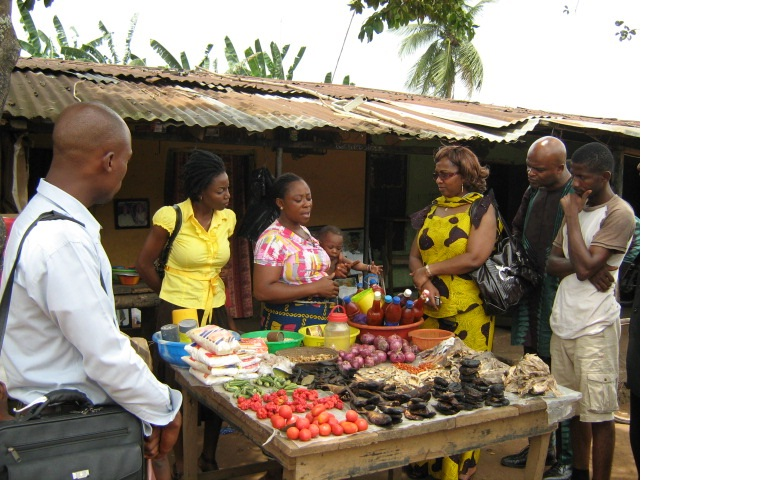
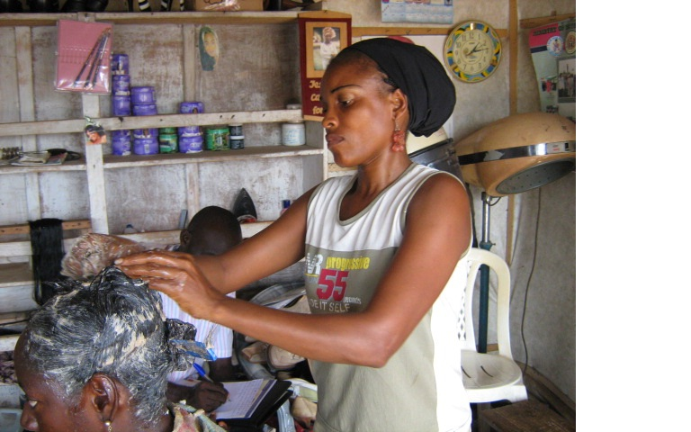
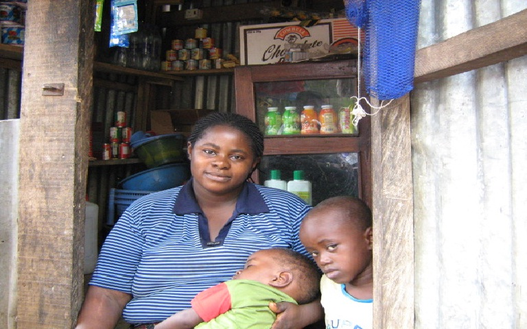

How self-help works
It begins with a passbook, not a handout.
A woman joins a primary group of her neighbours. The group guarantees one another, receives a first small loan, and keeps its own books — every naira in and out recorded by hand. Repayments fund the next member. Training comes alongside the money.
Over a cycle, the stall grows: more stock, a second table, a hired hand. The loan is repaid not out of charity but out of trade — and the ledger proves it.
"Finding alternatives for the poor." — the founding theme, 1984, and still the test we hold every programme to.Back a primary group →